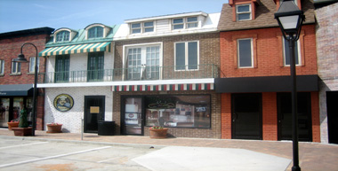

Cafe Vincze
From Wikipedia, the free encyclopedia
The 2013 Emirates Melbourne Cup was the 153rd running of the Melbourne Cup, Australia's most prestigious Thoroughbred horse race. The race, held on Tuesday, 5 November 2013, at Flemington Racecourse (in Melbourne, Victoria), was won by Fiorente, bred in Ireland and trained in Australia. The horse, owned by Andrew Roberts, was ridden by jockey Damien Oliver and trained by Gai Waterhouse.
The Food
The field for the 2013 Melbourne Cup consisted of 24 horses, with the barrier draw conducted three days prior to the race, on the day of the running of the Victoria Derby. Pre-race favourite Fiorente won the race by three-quarters of a length over Red Cadeux who finished one-and-a-half lengths ahead of Mount Athos.[2] He was the first favourite to win the race since Makybe Diva in 2005, and the first horse since Empire Rose in 1988 to win the race after placing second the previous year. Tres Blue and Dunaden, the winner of the 2011 race, both received banned medical treatment on the day of the race, but were both allowed to start, although a stewards' enquiry is planned. After the race, the mare Verema was euthanised, having broken her cannon bone midway through the race.
Ambiance
Except where otherwise listed, horses are trained in Australia:
- Dunaden (IRE)
- Green Moon
- Red Cadeux
- Sea Moon
For more of this article please click here.